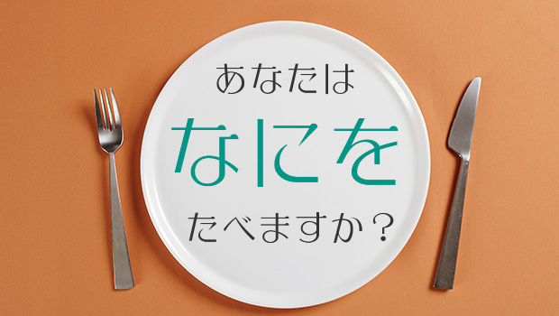
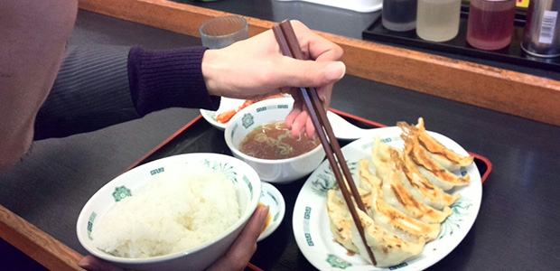

不毛な問いではありますが…
もし残りの人生において、ひとつのメニューしか食べられないとしたら何を食べるか。
生きていれば何度かそんな不毛なことを考えたことがあるでしょう。
と思って、ウチの庄本氏に訊いてみたこところ、
「よく、無人島に一つだけ持っていけるものがあるとしたら何？っていうアレと同じでしょ？ でも食べ物については考えたことないですね」とのこと。
いやいや、普通考えたことあるでしょ！ と思いながらこのブログを書いています。
さて、皆さんなら何を選びますか？
庄本氏にも考えてもらったんですが、彼は「フランス料理フルコース」とかほざいてまして（笑）、そういうのはナシ。
それだと食べられる食品の種類が多いかなと。
あくまで「ごく普通の一回の食事メニュー」ということで。
例えば「カルボナーラのパスタと野菜サラダ」みたいな感じですね。
ただし、よく考えて下さい。好きなだけではなく、一生それだけとなると栄養価も考えなくてはなりません。
まぁ何を食べようが偏ることには違いないにしても、できるだけ気を付ける必要はあるでしょう。
…ということを、私は年に何回か考えているのですが、ここ十数年の結論は全く変わりません。
私は絶対に「餃子！（定食）」
いや～アレは美味いでしょ。
しかも野菜・肉・皮の炭水化物とバランスも良い。
できれば家庭で作ったボリューム満点のものがイイですね。
多分私は飽きないと思います。
ちなみに私は、行きつけの店に行っても注文するものはほぼ同じです。
つまり好きになったものはとことんリピートする一途男なんですよ。
某ファミレスでは、「シーザーサラダ２皿」という注文の仕方をします。
２皿目は違うものに…という発想はない。
食べ物に一途な人は結婚しても一途。これ、my理論です（笑）。
食べたくなったら即…
そんな話を研究所ＨＰ支配人としていたので、めちゃくちゃ餃子が食べたくなりまして。
私「隣にある〇〇屋、ダブル餃子定食が600円ちょいでコスパすごいイイよ」
支「あ、いいスね。なんか食べたくなってきた」
ということで、定食屋さんへGO！

支配人は私のオススメ通りにダブル餃子定食（餃子１２個、ライス、キムチ、スープ）を注文。
で、私はというと…
はい、麺ものにしました。
だって、だってですよ！？
いざ餃子だけを食べなきゃならないときに備えて、せめて今は違うもの食べてもイイじゃないですか。
え、一途じゃなかったのかって？
まあまあ、それは状況によりけりですよ。
今の時代、ちゃんと先を見通せる力がないとイカンのです。
ホラ、細身の支配人のことですから絶対こうなると思ってた。
支「あ～食った！ 私お腹いっぱいなんで、残り食いません？」
私「あらそう。じゃ、遠慮なく」
でもやっぱり少しだけでは物足りないですね。
今週末あたり、餃子がっつりいこうかな、と（笑）。